Soil-structure interaction: 2d Portal Frame
Example .py file can be downloaded here:

 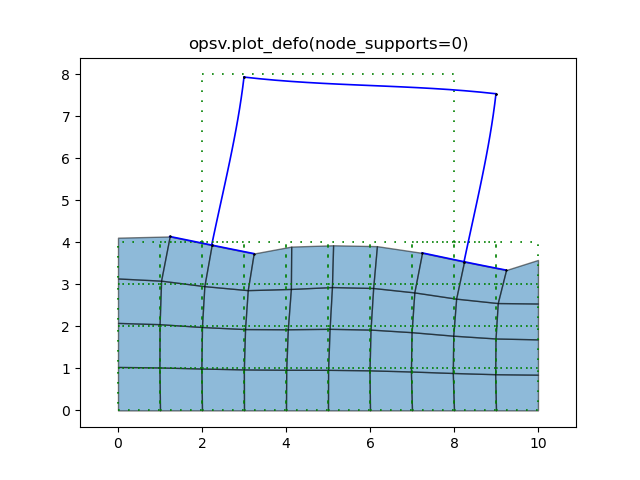
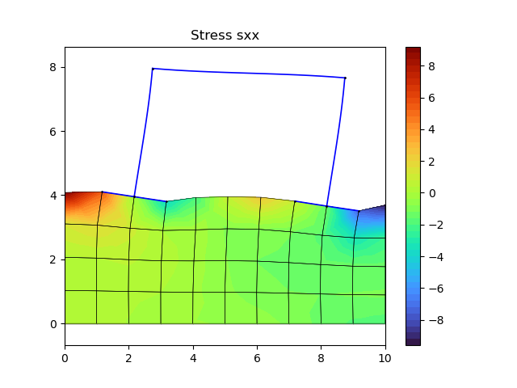
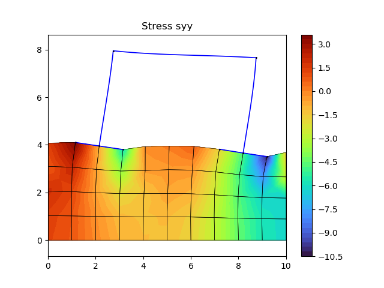
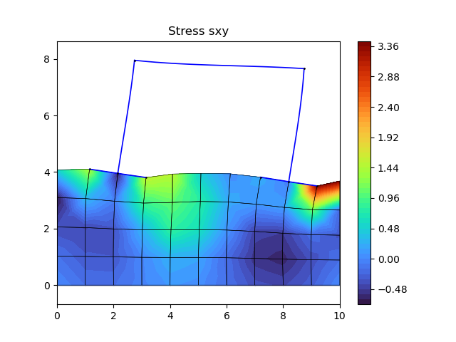
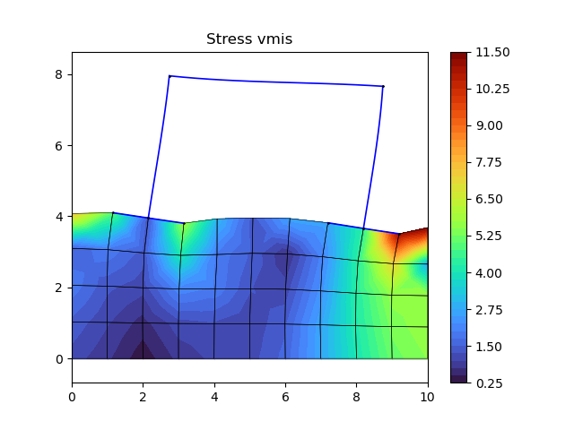
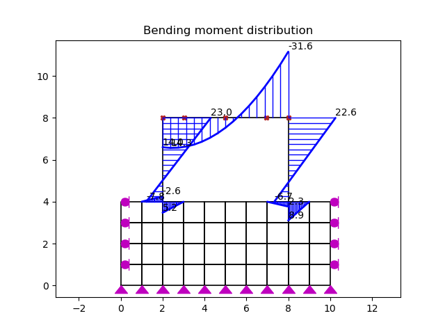
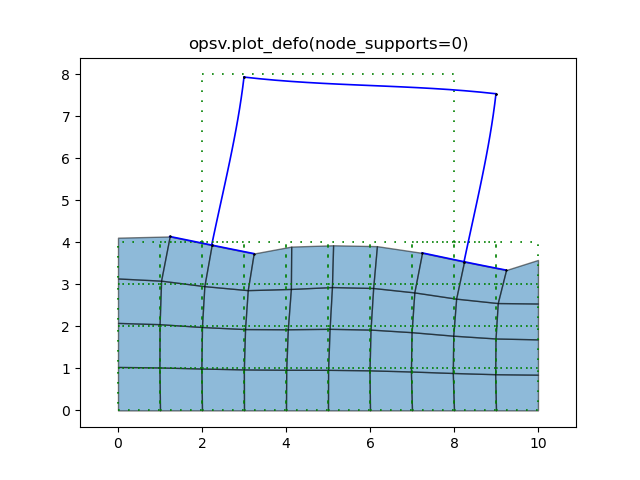
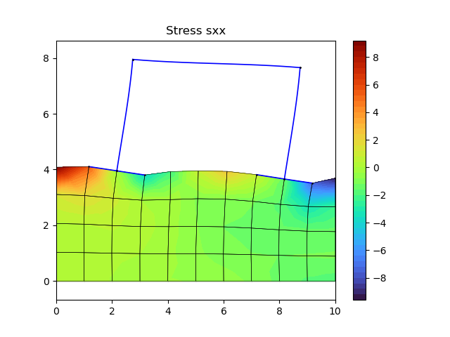
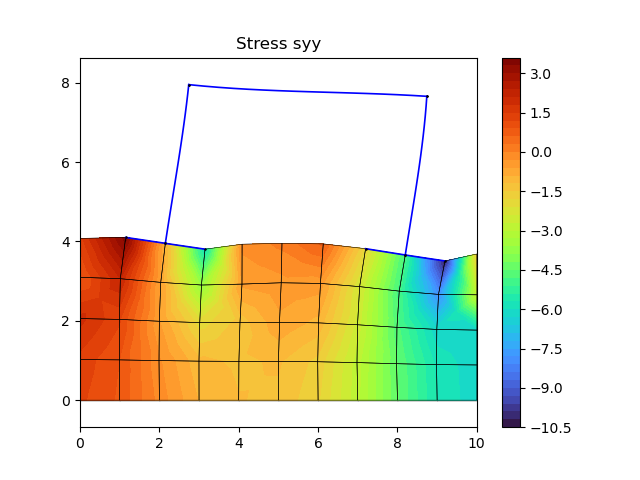
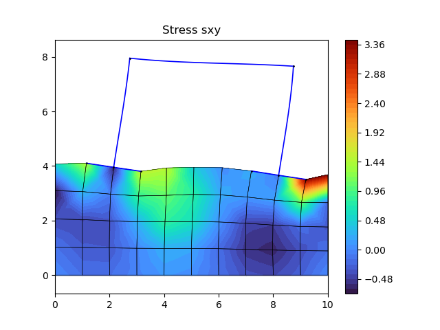
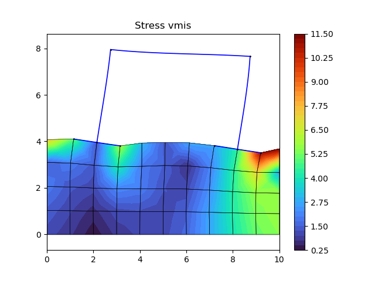
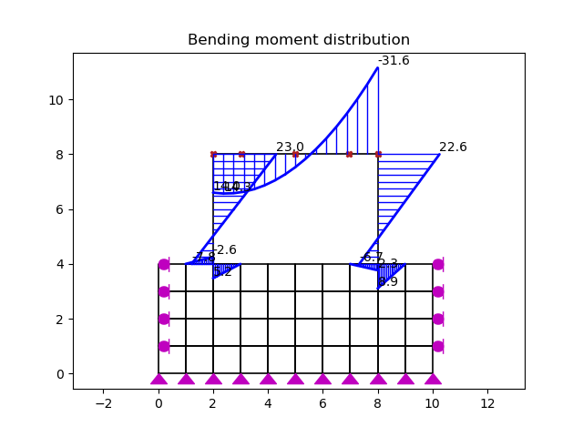
1import openseespy.opensees as ops
2import opsvis as opsv
3import matplotlib.pyplot as plt
4
5ops.model('basic', '-ndm', 2, '-ndf', 2)
6
7Ls, Hs = 10, 4
8nx, ny = Ls, Hs
9E0, Ec, Es = 1000, 20.e6, 200.e6
10
11b, h = .2, .3
12A, Iz, As, c = b*h, b*h**3./12., 0.0002, 0.025
13y1, z1 = h/2., b/2.
14nFibZ, nFib = 1, 20
15
16sec_tag, nip, beam_integ_tag, transf_tag = 1, 5, 1, 1
17mat0_tag, mat1_tag, mat2_tag = 1, 2, 3
18
19ops.nDMaterial('ElasticIsotropic', mat0_tag, E0, .3)
20ops.uniaxialMaterial('Elastic', mat1_tag, Ec)
21ops.uniaxialMaterial('Elastic', mat2_tag, Es)
22
23ops.block2D(nx, ny, 1, 1, 'quad', mat0_tag, 'PlaneStress', 1,
24 1, 0., 0.,
25 2, Ls, 0.,
26 3, Ls, Hs,
27 4, 0., Hs)
28
29ops.fixY(0., 1, 1); ops.fixX(0., 1, 0); ops.fixX(Ls, 1, 0)
30
31ops.model('basic', '-ndm', 2, '-ndf', 3)
32
33ops.node(100, 2., 4.); ops.node(101, 2., 8.)
34ops.node(102, 1., 4.); ops.node(103, 3., 4.)
35ops.node(110, 8., 4.); ops.node(111, 8., 8.)
36ops.node(112, 7., 4.); ops.node(113, 9., 4.)
37
38ops.equalDOF(46, 102, 1, 2); ops.equalDOF(47, 100, 1, 2)
39ops.equalDOF(48, 103, 1, 2); ops.equalDOF(52, 112, 1, 2)
40ops.equalDOF(53, 110, 1, 2); ops.equalDOF(54, 113, 1, 2)
41
42fib_sec_1 = [['section', 'Fiber', sec_tag, '-GJ', 1.0e6],
43 ['patch', 'rect', mat1_tag, nFib, nFibZ, -y1, -z1, y1, z1],
44 ['layer', 'straight', mat2_tag, 3, As, y1-c, z1-c, y1-c, c-z1],
45 ['layer', 'straight', mat2_tag, 3, As, c-y1, z1-c, c-y1, c-z1]
46 ]
47
48matcolor = ['r', 'gold', 'w']
49opsv.plot_fiber_section(fib_sec_1, matcolor=matcolor)
50plt.axis('equal')
51
52opsv.fib_sec_list_to_cmds(fib_sec_1)
53
54ops.beamIntegration('Lobatto', beam_integ_tag, sec_tag, nip)
55
56ops.geomTransf('Linear', transf_tag)
57ops.element('elasticBeamColumn', 101, 100, 101, A, Ec, Iz, 1)
58ops.element('elasticBeamColumn', 111, 110, 111, A, Ec, Iz, 1)
59
60ops.element('forceBeamColumn', 121, 101, 111, transf_tag, beam_integ_tag)
61
62ops.element('elasticBeamColumn', 103, 102, 100, A, Ec, Iz, transf_tag)
63ops.element('elasticBeamColumn', 104, 100, 103, A, Ec, Iz, transf_tag)
64
65ops.element('elasticBeamColumn', 113, 112, 110, A, Ec, Iz, transf_tag)
66ops.element('elasticBeamColumn', 114, 110, 113, A, Ec, Iz, transf_tag)
67
68Px, Py, Wy = 15., 2., -3.
69
70ops.timeSeries('Linear', 1)
71ops.pattern('Plain', 1, 1)
72ops.load(101, Px, -Py, 0.)
73
74ops.eleLoad('-ele', 121, '-type', '-beamUniform', Wy)
75
76ops.analysis('Static')
77ops.analyze(1)
78
79opsv.plot_model()
80opsv.plot_load()
81
82opsv.plot_defo(node_supports=0)
83plt.title('opsv.plot_defo(node_supports=0)')
84
85sfac = 20.
86
87_, ax = opsv.plot_defo(unDefoFlag=0, node_supports=0, sfac=sfac)
88opsv.plot_stress('sxx', sfac=sfac, ax=ax)
89plt.title('Stress sxx')
90
91_, ax = opsv.plot_defo(unDefoFlag=0, node_supports=0, sfac=sfac)
92opsv.plot_stress('syy', sfac=sfac, ax=ax)
93plt.title('Stress syy')
94
95_, ax = opsv.plot_defo(unDefoFlag=0, node_supports=0, sfac=sfac)
96opsv.plot_stress('sxy', sfac=sfac, ax=ax)
97plt.title('Stress sxy')
98
99_, ax = opsv.plot_defo(unDefoFlag=0, node_supports=0, sfac=sfac)
100opsv.plot_stress('vmis', sfac=sfac, ax=ax)
101plt.title('Stress vmis')
102
103opsv.section_force_diagram_2d('M', 1.e-1, number_format='.1f')
104plt.title('Bending moment distribution')
105
106plt.show()